BI for beginners (session 1)
Power BI
beginner
Session materials
Previous attendees have said…
- 60 previous attendees have left feedback
- 100% would recommend this session to a colleague
- 97% said that this session was pitched correctly
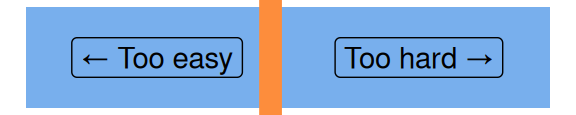
Three random comments from previous attendees
- Great structured session, at a pace that makes sure everyone can follow, may be there can we be a sum up at the end of each session.
- I’ve never used Power Query Editor so it has been really interesting and makes me want to go and have a try
- another fabulously informative session
Forthcoming session(s)
| Booking link | Date |
|---|---|
| BI for beginners (session 1) | 14:00-16:00 Thu 18th September 2025 |
| BI for beginners (session 1) | 14:00-16:00 Tue 4th November 2025 |
Session outline
If you’d like to get a sense of the core content, you might have a look at the video outline for this session:
- practical first
- loading data
- making visualizations
- manipulating data
- then some explanation and examples
- what is it for?
- how does it work?
Two words of warning…
- This course uses Power BI Desktop. Most of the skills here are transferable to other versions of Power BI, but you’ll need Desktop to follow the examples
- Licencing and publication can be complicated in Power BI. We don’t discuss that much here, but it’s important to understand the implications if you’re planning to use it in practice. The KIND Network is a good resource for those kinds of questions.
Hospital occupancy data
Task
- download, and open the sample s01_data.xlsx workbook in Excel
- have a look at the two sheets, called
occupancy_shandwards_sh - each contains a table, which are named
occupancyandwards - close the Excel file
Open Power BI desktop
Task
- Open Power BI desktop 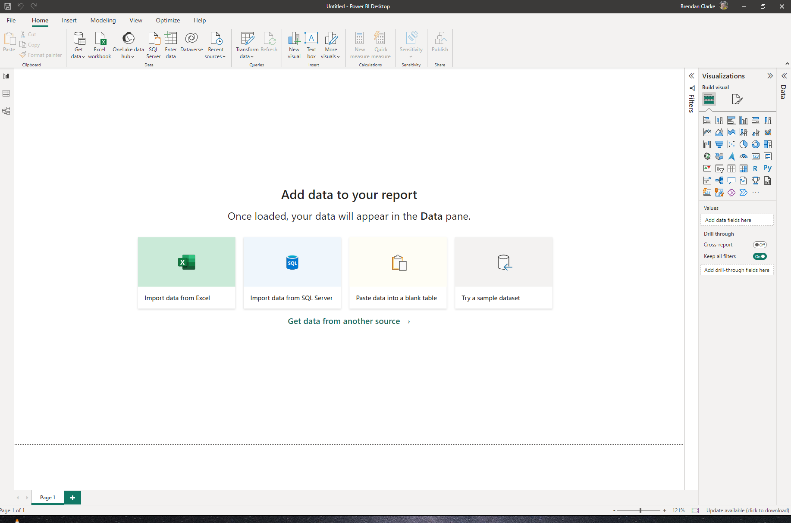
Loading data
Task
- go to the data view
- go to the Get data dropdown on the ribbon, and select Excel workbook 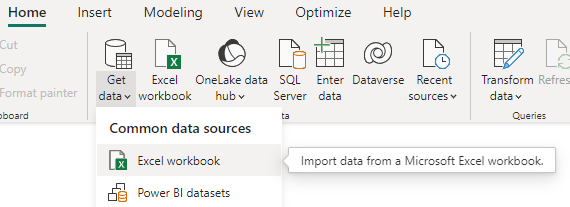
Hospital occupancy data
Task
- we want
data/s01_data.xlsx - select the two tables in the preview and select load 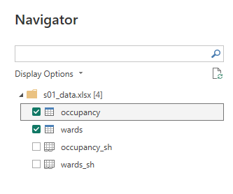
Three views
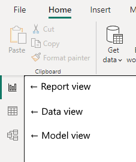
- Report view, where you’ll build your dashboard
- Data view, where you’ll manage your data sources
- Model view, where you’ll manage the model
Task
- Have a look at each of the three views
Hospital occupancy data
- once loaded, we can access this data in lots of different ways:
- in report view, via the data pane
- in data view
- in model view as the relationship blocks
- data loading is one-way
- what we do in Power BI won’t change the underlying files
- but if our files change, we’ll need to refresh our data
What does the model do?
The model shows (and controls) how the elements of your data fit together
Power BI should have guessed a couple of relationships in this data
we’ll talk about these relationships more in session 4 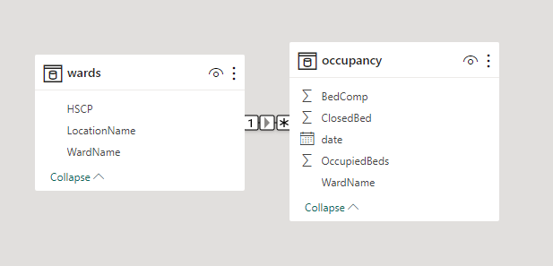
Investigating our data
- for now, let’s use this data to build a simple visualisation
Task
- Go to the data view
- Look at each of tables
- In the occupancy table, select the OccupiedBeds column
- Look through the ribbon’s Column tools to see what options are available 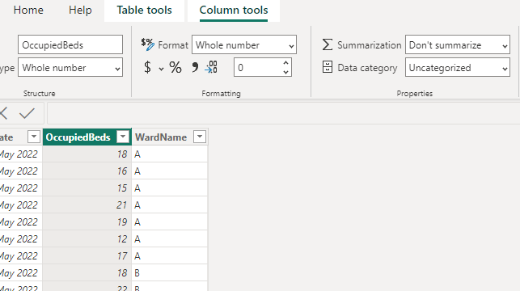
Time to add a visualization
Task
- Go to the report view
- Select Line chart from the visualizations pane 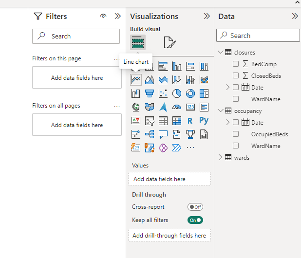
- Enlarge the visualisation to fill the page
- Add some data:
- Drag the OccupiedBeds column from the occupancy table to the Y-axis field
- Drag the Date column from the occupancy table to the X-axis field 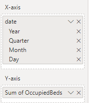
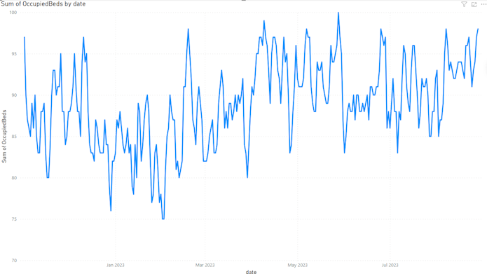
Making our chart more useful
Task
- Try dragging the WardName column to the Legend field 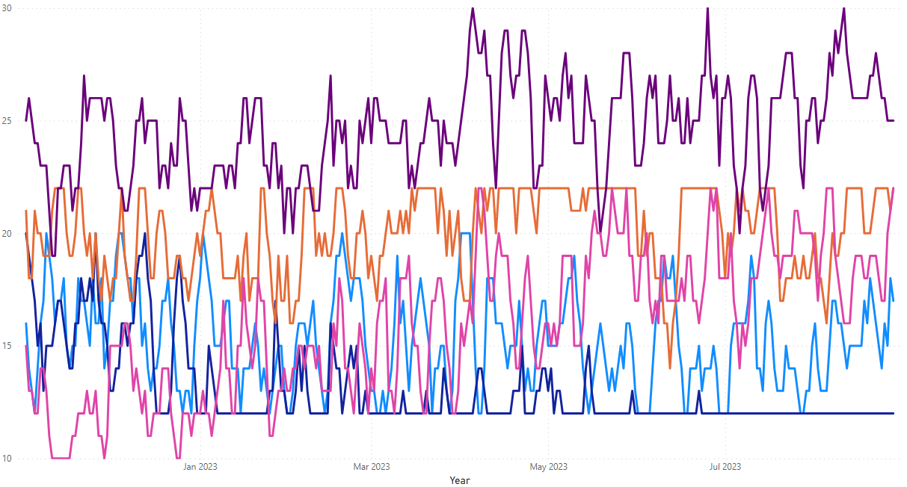
Changing the data
Task
- open
data/s01_data.xlsxin Excel (again) - change some of the values
- close Excel (essential) and return to Power BI
- refresh the data 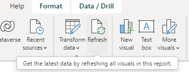
Calculated columns
- Calculated columns are how we describe columns calculated from other values
- Here, we could calculate something simple for each ward - how about the number of non-closed beds available?
Task
- go to the data view and select the occupancy table
- select New column from the ribbon 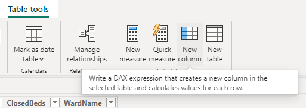
- now we write a formula in the formula bar:
AvailableBeds = [BedComp] - [ClosedBed]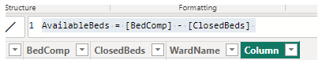 - AvailableBeds = our new column name
-
[BedComp]and[ClosedBed]are the existing column names that we’re subtracting
- Congratulations! You’ve just written your first DAX formula.
What is DAX?
DAX (Data Analysis eXpressions) is the formula language used in Power BI, Power Pivot…
- similar to Excel formulas
- functions have similar names and similar behaviours
- DAX is more ‘fussy’ than Excel
- we’ll talk about DAX more in session 4
What is Power BI for?
- NHS Scotland TURAS intelligence
- NHS Digital Adult Social Care dashboard - particularly great for showing how Power BI can be used as a hub for data. I imagine how many Excel files on shared network drives this might have required before…
- Northern Ireland Department of Health COVID dashboard - an object lesson in scale, and I’d be keen to use Power BI if a service potentially was going to be very busy, or experience highly variable load
- QI project dashboard from NHS England’s East London NHS Foundation Trust - some useful thoughts about implementing a project in Power BI
Power BI has attractive features
- Interactive
- Dynamic
- Presenting data from many sources
- Scalable
- Separates data from analysis/presentation
Homework tasks
- Try using the filters pane to play with your dashboard. How do filters change your visual?
- Could you use the data from this session to find out how often a ward is overcrowded?
- Can you plot the AvailableBeds column?